Cindersap Forest
Cindersap Forest is a large exterior region found in the southwest part of Stardew Valley. It has exits to the north into the Farm, to the east into Pelican Town, to the south into The Sewers, and to the northwest into the Secret Woods. Cindersap Forest is the only place where Spring Onions are found.
Three festivals take place in Cindersap Forest: the Flower Dance on Spring 24, the Trout Derby on Summer 20-21, and the Festival of Ice on Winter 8.
At the start of the game, there are many twigs, rocks, and weeds throughout the forest. If cleaned up, the debris will reappear each Spring 1.
Features
| Image | Name | Description | Occupants |
|---|---|---|---|
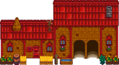 |
Marnie's Ranch | Located in the northeast corner of the map, this is where the player can purchase animals and animal related goods. Marnie lives here with her niece and nephew, Jas and Shane. | |
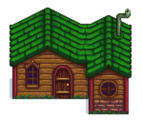 |
Leah's Cottage | Located to the south of the path to Pelican Town, this is where Leah lives. | |
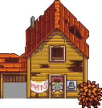 |
Abandoned House | Located to the southwest of the pond, this run-down building will open up shop when Achievements start to be earned. Once open for business, the Hat Mouse will sell the player hats based on the achievements they've unlocked. | 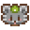 Hat Mouse |
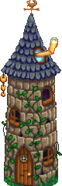 |
Wizard's Tower | Located on the western side of the map, this is where the Wizard lives. It can be entered after unlocking the "Meet The Wizard" quest. | |
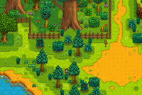 |
Big Tree | Located to the north of Cindersap Forest, between the lake and Marnie's Ranch. After a strong wind storm fells the tree, it transforms into the Giant Stump and unlocks "The Giant Stump" quest. | |
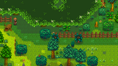 |
Secret Woods | Located next to the northwest corner of the forest. It can be entered after removing a Large Log blocking the entrance, which is possible once the Axe has been upgraded to steel or better. | |
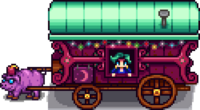 |
Traveling Cart | Appears every Friday and Sunday from 6:00am to 8:00pm along the northern edge of the map and the Traveling Merchant will sell the player a wide selection of random goods. | Traveling Merchant |
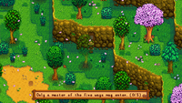 |
Mastery Cave | Located to the north of the Sewer entrance. There is a plaque that reads "Only a master of the five ways may enter." |
Trash Bear
The Trash Bear is located at the bottom of Cindersap Forest, by the Spring Onion patch and the entrance to The Sewers. Trash Bear will appear on non-rainy, non-festival days beginning year 3. Interacting with Trash Bear will show a dialogue bubble of a random desired item. After giving Trash Bear the requested item, clicking on Trash Bear will reveal another request. Fulfilling four requests will trigger a cutscene in which Trash Bear plays pan-pipes, flies up on an umbrella made of leaves, and then cleans up the trash in the unreachable area near the water, replacing the trash with bushes and trees. Trash Bear continues flying on the umbrella to Pelican Town, where the trash in Pam's front yard is removed. Dusty's dog pen also gets an upgrade.
Trash Bear will request 2 random seasonal fish or foraged items, then 2 cooked dishes. There is no time limit in fulfilling these requests. Note, however, that requests will not be able to be fulfilled on rainy days as Trash Bear does not appear on those days. A request will never change until it is completed, unless the season changes and the previous request was seasonal. In this case, Trash Bear's request will change to fit the new season. Shown below is a complete list of the random seasonal items Trash Bear may request:
Pot of Gold
On Spring 17, a pot of gold appears at the end of a rainbow at the waterfall near the Abandoned House.[1] When the player interacts with the pot of gold, they receive the Leprechaun Hat and some Gold. This is repeatable. In Year 1, players receive  200g; this increases every year by
200g; this increases every year by  25g until Year 93, when the amount caps out at
25g until Year 93, when the amount caps out at  2,500g.[2]
2,500g.[2]
Foraging
Standard forageable items found on the ground in Cindersap Forest are:[3]
- In Spring: Wild Horseradish (50%), and Dandelion (50%)
- In Summer: Sweet Pea (60%), and Spice Berry (40%)
- In Fall:
 Common Mushroom (50%), and Blackberry (50%)
Common Mushroom (50%), and Blackberry (50%) - In Winter: Crocus (39%), Crystal Fruit (39%), and
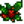
Holly (22%)
Forageable items spawn at an average rate of 1.8 per night in spring and fall; in summer and winter the rate is 1.6 per night.[4] The map shows the possible locations as red and magenta tiles; when the original trees are present, the magenta tiles have a 90% smaller chance of spawning items because they are identified as being behind the original trees.
Spring Onions are also found in Cindersap Forest during the Spring. They appear only on tillable soil on the large southeastern island (the green tiles on the map). Every night, any existing onions are removed, and new onions spawn. These onions are not standard forageable items, and therefore do not count as part of the six item per map limit.
The forest also contains a large variety of Trees, which can be chopped down to harvest Wood and other items. As with all pre-existing trees outside the Farm, they will automatically regrow as long as the stump is removed.
Artifact Spots
Artifacts that can be found by digging up Artifact Spots in Cindersap Forest are:
 Palm Fossil (0.6% + 3-5%[5])
Palm Fossil (0.6% + 3-5%[5])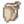
Prehistoric Scapula (3-6%[5])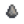
Prehistoric Handaxe (3%)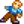
Ancient Doll (2.4%)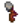
Prehistoric Tool (2.1%) Trilobite (1.9%)
Trilobite (1.9%)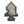
Arrowhead (1.6%)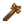
Chewing Stick (1.5%)- Elvish Jewelry (0.8%)
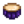
Ancient Drum (0.7%)- Bone Flute (0.7%)
 Ancient Seed (0.7%)
Ancient Seed (0.7%) Ancient Sword (0.7%)
Ancient Sword (0.7%) Ornamental Fan (0.7%)
Ornamental Fan (0.7%)- Prehistoric Tibia (0.6%)
- Amphibian Fossil (0.6%)
 Strange Doll (green) (0.06%)
Strange Doll (green) (0.06%) Strange Doll (yellow) (0.06%)
Strange Doll (yellow) (0.06%)
Other possible items are:
- 1-3
 Clay (14-29%[5])
Clay (14-29%[5])  Lost Book (20% + 3-7%[5]); once all Lost Books have been found, any potential Lost Book is replaced by
Lost Book (20% + 3-7%[5]); once all Lost Books have been found, any potential Lost Book is replaced by  Mixed Seeds.
Mixed Seeds.- Only in Winter:
 Winter Root (18%)
Winter Root (18%) - Only in Winter:
 Snow Yam (12%)
Snow Yam (12%) - 1-3
 Stone (5-10%[5])
Stone (5-10%[5]) - 1-3
 Copper Ore (2.4-5%[5])
Copper Ore (2.4-5%[5]) - Only in Spring: 2-5 Rice Shoot (4%)
- An unseen
 Secret Note: up to 3% chance, only if the player has a Magnifying Glass.
Secret Note: up to 3% chance, only if the player has a Magnifying Glass.
Artifact spots spawn at an average rate of 0.1 per night, except in winter when the average rate increases to 1.0 per night.[6]
Fishing
Cindersap Forest is the only map with different bodies of water that contain different fish: the river and the pond.
Fishing is also part of the festivities during the Trout Derby and Festival of Ice.
The forest is bordered to the south by the ocean. While it is possible to cast a fishing rod from the cliffs down to the ocean (near the bridge that leads to the area where the Flower Dance takes place), only river fish can be caught there, not ocean fish.
River
The primary fishing location in Cindersap Forest is the river flowing through it. It is an extension of the river found in Pelican Town, and therefore contains mostly the same river fish. Two fish, Chub and Dorado, are found in the forest river but not in town; the Smallmouth Bass is found in town but not in the forest river (it is, however, found in the forest pond). Also, the forest river is home in Winter to a Legendary Fish, the Glacierfish, as well as the Glacierfish Jr., one of the legendary fish II.
Pond
The second body of water for fishing in Cindersap Forest is the large pond in its northwest corner. Its selection of fish is more limited than the river (Carp, Catfish, Midnight Carp, Perch, Pike, Smallmouth Bass, and Walleye, dependent on season).
Waterfalls
The last body of water for fishing in Cindersap Forest is beneath the waterfalls near the Abandoned House. It has all the forest river fish, and also the Goby that can be caught at any season and time, and Salmon can be caught in Fall at any time. (This is the only location where Salmon can be caught after 7pm.)
| Time | |||||||||||||||||||||
|---|---|---|---|---|---|---|---|---|---|---|---|---|---|---|---|---|---|---|---|---|---|
| 6 | 7 | 8 | 9 | 10 | 11 | 12 | 1 | 2 | 3 | 4 | 5 | 6 | 7 | 8 | 9 | 10 | 11 | 12 | 1 | ||
| Sunfish | River | Sunny day only | |||||||||||||||||||
| Catfish | River | Rainy day only | |||||||||||||||||||
| Chub | River | ||||||||||||||||||||
| Green Algae | River/Pond | ||||||||||||||||||||
| Smallmouth Bass | Pond | ||||||||||||||||||||
| Shad | River | Rainy day only | |||||||||||||||||||
| Bream | River | ||||||||||||||||||||
| Goby | Waterfall | ||||||||||||||||||||
| 6 | 7 | 8 | 9 | 10 | 11 | 12 | 1 | 2 | 3 | 4 | 5 | 6 | 7 | 8 | 9 | 10 | 11 | 12 | 1 | ||
| Dorado | River | ||||||||||||||||||||
| Rainbow Trout | River | Sunny day only | |||||||||||||||||||
| Sunfish | River | Sunny day only | |||||||||||||||||||
| Chub | River | ||||||||||||||||||||
| Green Algae | River/Pond | ||||||||||||||||||||
| Pike | River/Pond | ||||||||||||||||||||
| Shad | River | Rainy day only | |||||||||||||||||||
| Bream | River | ||||||||||||||||||||
| Goby | Waterfall | ||||||||||||||||||||
| 6 | 7 | 8 | 9 | 10 | 11 | 12 | 1 | 2 | 3 | 4 | 5 | 6 | 7 | 8 | 9 | 10 | 11 | 12 | 1 | ||
| Salmon | River | ||||||||||||||||||||
| Tiger Trout | River | ||||||||||||||||||||
| Catfish | River | Rainy day only | |||||||||||||||||||
| Chub | River | ||||||||||||||||||||
| Midnight Carp | Pond | ||||||||||||||||||||
| Green Algae | River/Pond | ||||||||||||||||||||
| Smallmouth Bass | Pond | ||||||||||||||||||||
| Shad | River | Rainy day only | |||||||||||||||||||
| Walleye | River/Pond | Rainy day only | |||||||||||||||||||
| Bream | River | ||||||||||||||||||||
| Salmon | River/Waterfall | ||||||||||||||||||||
| Goby | Waterfall | ||||||||||||||||||||
| 6 | 7 | 8 | 9 | 10 | 11 | 12 | 1 | 2 | 3 | 4 | 5 | 6 | 7 | 8 | 9 | 10 | 11 | 12 | 1 | ||
| Tiger Trout | River | ||||||||||||||||||||
| Chub | River | ||||||||||||||||||||
| Midnight Carp | Pond | ||||||||||||||||||||
| Green Algae | River/Pond | ||||||||||||||||||||
| Lingcod | River | ||||||||||||||||||||
| Perch | River/Pond | ||||||||||||||||||||
| Pike | River/Pond | ||||||||||||||||||||
| Bream | River | ||||||||||||||||||||
| Goby | Waterfall | ||||||||||||||||||||
Secret
By fishing from the southernmost point of Cindersap Forest near the entrance to the sewers towards the ocean, with a fishing level of at least 15 (only possible temporarily via buffs), an Iridium Krobus statue can be obtained.
References
- ↑ See Forest::DayUpdate.
- ↑ See Object::checkForAction, case "(O)PotOfGold" for amount of gold coins generated each year. See Farmer::OnItemReceived, case "(O)PotOfGold" for value of those gold coins.
- ↑ For each forage item, the provided percentage is the average percentage of all forage items that will be the specified item for that season. The input data is Locations.xnb, which is processed by code in GameLocation::spawnObjects.
- ↑ Of the 14400 total tiles in Cindersap Forest, 2025 (14%) are valid spawn locations for standard forage items. For more information on forage item spawning, see Foraging.
- ↑ 5.0 5.1 5.2 5.3 5.4 5.5 The chance of finding extra items in Artifact Spots is season-dependent. The maximum chance is in summer and fall. In winter, the chance is 50% less; in spring it is 6% less. See Artifact Spot for more information.
- ↑ Of the 14400 total tiles in Cindersap Forest, 574 (4%) are valid spawn locations for artifact spots in spring, summer, and fall. 4065 (28%) are valid spawn locations in winter. See Artifact Spot for more information.
History
- 1.4: Added Trash Bear. Debris now respawns each Spring 1.
- 1.5: Iridium Krobus statue can now be caught while fishing at the southernmost point of the forest near the sewers entrance.
- 1.6: Added Mastery Cave entrance north of sewer grate and Big Tree between the lake and farm entrance. Added Trout Derby and Pot of Gold. Added new fish: Goby. Salmon can now be caught beneath the Waterfalls.
| Locations | |
|---|---|
| Locations | Backwoods • Beach • Bus Stop • Calico Desert • Cindersap Forest • Farm • Farm Cave • Farm Pond • Graveyard • Ginger Island • Mastery Cave • Minecart • Mines • Mountain • Mutant Bug Lair • Pelican Town • Quarry • Quarry Mine • Railroad • Secret Woods • Sewers • Skull Cavern • Summit • Tunnel • Volcano Dungeon • Witch's Swamp |